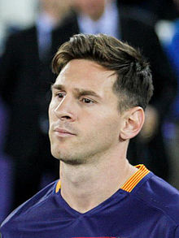
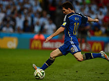

Messi
Lionel Andrés "Leo" Messi born 24 June 1987) is an Argentine professional footballer who plays as a forward for Spanish club Barcelona and the Argentina national team. Often considered the best player in the world and rated by many in the sport as the greatest of all time, Messi is the only football player in history to win the FIFA Ballon d'Or five times, four of which he won consecutively, and the first player to win three European Golden Shoes. With Barcelona he has won seven La Liga titles and four UEFA Champions League titles, as well as three Copa del Rey titles. A prolific goalscorer, Messi holds the records for most goals scored in La Liga, a La Liga season (50), a calendar year (91), a single season (73), a Champions League match (five), and most Champions League seasons (five).

Argentine international, Messi has represented his country in six major tournaments. At youth level, he won the 2005 FIFA World Youth Championship, finishing the tournament as its best player and top scorer, and an Olympic gold medal at the 2008 Summer Olympics. His style of play as a diminutive, left-footed dribbler drew comparisons with compatriot Diego Maradona, who declared the teenager his successor. After making his senior debut in August 2005, Messi became the youngest Argentine to play and score in a FIFA World Cup during the 2006 edition, and reached the final of the 2007 Copa América, where he was named young player of the tournament. As the squad's captain since August 2011, he led Argentina to the finals of the 2014 World Cup and the 2015 Copa América, and both times was selected as player of the tournamen
